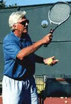

Previous: The Strange Saga of Monique and the Donald - Part 2 | 🏠 Famous Coaches Home | Next: The trophy position
The Three Forehand Finishes
Comprehensive unified tennis knowledge base — Fundamentals, Stroke Analysis, Reference Library, and more
The Three Forehand Finishes
Robert Lansdorp
Hitting through, finishing down and across, and reversing--the 3 forehand finishes in the modern game.
Over the years, I've tried to learn from the players as well as teach them. I've tried to understand how the game has changed, and my teaching has changed to reflect that.
I have always believed in teaching players to hit through the ball. And I still do. The follow-through is what determines how the ball comes off the racket and therefore the pace and the spin. That's why I've always paid attention to how the player finishes the stroke.
To be a complete player in today's pro game, I think you need to develop three finishes.
The first is the classic out-front finish that I have always taught.
The second one is the "reverse" finish where the player reverses the path of the racket and finishes on the opposite side of the body and over the head. Pete Sampras made this finish famous with his running forehand, though it is now common in the pro game. I've written about both of these finishes in my previous articles. (Click Here.)
The new dominant finish in the pro game, downward and across the body.
The next finish is something new that I've gradually added in the last few years. This finish is the across the body or the downward finish. This is the finish so many of the top players now use. Roger Federer is the obvious example. The bald guys are the only ones who still follow-through high on every ball. In this article I'm going to talk about these finishes, how I learned about them, and how I incorporate them into my teaching.
The Out-Front Finish
I never studied how to hit the tennis ball when I started teaching. I took my own strokes as an example. I remember as a 16-year-old working hard on stretching my body out and always bringing the arm straight out on my backhand. Then when I started teaching, I just applied the same thing to my forehand.
I taught that straight out finish from day one, starting in 1967. I taught everybody the same way, with the follow-through out-front. I taught it on the forward and backhand. When the two-handed backhand began to dominate, I taught the follow-through the same way, as a left-handed forehand.
The racket just went straight out. There was no turn of the racket head. It worked tremendously well.
Pete Sampras, age 10, demonstrates the classic out-front finish.
Tracy Austin in her day, all 104 pounds of her, hit the ball harder than Chris Evert. The ball came off her racket probably the cleanest of any of the women, and therefore had the most pace. Tracy took to it immediately. There wasn't a lot of struggling. It was just very simple. That finish was the most perfect way to learn to hit through the ball, and to hit the ball perfectly cleanly.
I trained Pete Sampras and Lindsay Davenport the same way. Nobody could convince me not to have my players extend straight up front. There was no doubt in my mind. You can see exactly how well it works in the video I took of Pete Sampras, at age ten, in 1981. In retrospect, it's incredible to look. I've always been a stickler and I've never really changed my attitude. I'm very particular on the way students hit through the ball.
In the lesson, when you have players leave the racket out in front, it might look a little stiff. But you have to understand this is a teaching exercise. When it's learned correctly, it doesn't look stiff in actual play. In matches, there'll be a little flex at the end and the arms will look relaxed.
Pete and Lindsay in match play with the arm extended and a little flexed.
The game has changed since I developed that out front finish, and the big difference is in the grips. In the years when I was teaching Tracy and Pete and Lindsay--and a lot of other players who made the top 30 and higher--the grips were far more conservative. The continental was on its way out, but it was still around. Believe it or not, the eastern grip was probably the most extreme grip, or maybe a grip that slid a little further underneath, but not much. With those grips the exercise of holding the racket out front was perfect.
I still teach that same finish to anybody and everybody. I do it especially with kids. I have them hit and leave it up front. But, because of the grips, I'm a little bit more lenient about exactly where the racket finishes. The racket might turn a little bit because of the grip, and the face of the racket might turn over a little and point a little bit to the ground.
I'm not fanatic about the racket being straight up and down because when players do that it doesn't really look right with the modern grips. So, I'll let them turn it over a little. But I still want to see if they still can hit through the ball, and if they can control the wrist coming through the ball.
The across the body finish isn't new, but has become the norm.
The Downward Finish
In the last few years, I've also expanded my thinking about the follow-through beyond just the straight out finish on the drive. It may sound bizarre for me to say, but I now believe that the players can also hit through the ball with a lower finish down and across the body. In fact, I think at higher levels it actually works better.
I'm not a scientist, but I've found from working with some of the best players in the world that they can not only hit through the ball but they can hit with more spin. If you look at Roger Federer, this is what is happening. It's one of the reasons he has the best forehand in the game.
Finishing across the body isn't something that is totally new, as you can see from the clip of Rod Laver hitting a short forehand in the 1970s. But today it is almost the norm on the pro tour.
The lower finish allows you to drive the ball hard and still have maximum spin.
I first noticed it myself around 10 years ago watching pro tennis. I always loved to watch the South Americans and the European clay courters play when I would go the US Open. I love watching guys who just fight. And these guys had that mentality. They would just fight, fight, fight.
But when they would get shorter balls, you would see them rip the shot with this different finish. They would follow through down, across the body, sometimes way down towards the hip. And they'd just rip winners. And I thought to myself, "What the hell are these guys doing?" To me that was fascinating.
I certainly didn't change my teaching at that time. But as time went on, and I saw more and more players doing it, I started to study this finish and I experimented with it myself. What I realized was that if you follow through lower across the body, around the waist or sometimes even lower, the ball doesn't float as much. The ball is being hit so hard today, that it sometimes floats with the higher finish. With this lower finish the players were generating tremendous pace but also as more spin.
The extension through the line of the shot can actually be better with the lower finish.
And looking back, I'm always that kind of person that says, "Jesus Christ. Why didn't I figure that out sooner?" There are some players that it might have helped because they would have been able to control the ball a little bit better.
When you look at Federer, this is what you see. He's coming through the ball, but it doesn't look like he's trying to brush up on the ball. Still, he hits heavy spin. So, I started teaching players to try the downward finish. What I found was that worked sort of automatically, the same way the up-front finish worked in the old days.
By following through lower, my students could drive the ball hard and have maximum topspin, but without really thinking about it. You don't really have to tell players, "Come up. Brush up on the ball." Instead, I tell them to finish a little lower, but drive through the ball. You're not really trying to hit major spin. It's a natural process where the ball has more spin.
The more extreme the grip the better the downward finish works.
I haven't abandoned the up-front finish. I still have players follow-through out-front and hold the finish. But at some point. I usually teach the lower finish to everybody as well. Strangely enough, I have them hit maybe 20 balls and leave it up front. Then I tell them, "Okay, drive the ball and follow through down." And then sometimes I say, "Okay, drive the ball and follow through up." And I'm looking at how the ball comes off the racket the best.
The ball is being hit harder today than ever and this finish is one reason. As they start driving the ball harder and harder, players find it's much easier to control the ball by coming down with the follow-through. It makes the ball drop down more than with the higher finish.
I call it the downward finish, but it's important to understand how the racket gets to that position. If you watch Federer's forehand, he doesn't just bring it immediately around his body. When they watch it on TV, it may look like he immediately wraps around. But if you look closely or study it in slow motion, you'll see that the racket comes well out towards the net first.
Sampras made the reverse forehand famous but every player in the game uses it at times.
In fact, with the downward finish, sometimes the racket goes further out toward the net than with the high finish. The extension along the line of the shot may be better. I think the racket can come through the ball a little big longer.
I work a lot on that shot with kids to give them the confidence that coming down actually works. Once they get used to it, they love doing it because it feels so much more comfortable on the follow-through. The more extreme the grip, the more you follow through down, the better it works. Making a follow through down low toward your hip with an extreme grip works ten times better than trying to follow through up high with that grip. You can just get a better shot.
Reverse Forehand
The other forehand finish is the reverse finish. I call this finish the reverse, because during the follow-through the racket head moves slightly forward through the ball, but then moves upwards and then backwards in the opposite direction from the hit. Pete Sampras's running forehand was the shot that first brought a lot of attention to this shot, but every player in the game uses it to a greater or lesser extent. Hitting the reverse forehand adds options. With the reverse, a pro player can save himself a minimum of 10 points in an average match. That's a huge difference.
Without the reverse forehand, Maria would never have won Wimbledon.
Maria and the Reverse
Recently I've been criticized by television commentators for teaching the reverse forehand to Maria Sharapova. But if Maria would not have had a reverse forehand, she would not have won her first Wimbledon. I can guarantee you that.
These commentators Patrick McEnroe, Cliff Drysdale, John McEnroe, they're great people. Don't get me wrong. I don't think that John McEnroe is an ass, just because he acts like one sometimes. And Patrick McEnroe is probably one of the nicest guys there is. And it's not all their fault because I don't think it is really their job to understand the technique of every shot. But they shouldn't criticize if they don't understand it.
When they criticize me for teaching a reverse forehand, they don't observe how the game has changed. Jennifer Capriati, for example, had probably the greatest reverse forehand all the time. She hit it so unbelievably well that to them it looked like a regular forehand.
Capriati hit the reverse so well, commentators didn't notice the finish.
I have never heard anybody in the last 15 years say, "Oh, my god! What is Capriati doing with that forehand?" Because it looked so good, they didn't even notice it. But when Maria hits a reverse forehand, she looks more gangly. She's tall for a girl, and some days she just looks like she's all over the place. That doesn't mean there is something wrong with the shot itself.
When Maria won Wimbledon, she only hit probably 20% reverse forehands. She used it when she needed it to neutralize Serena's pace in that final, and to stay in the rallies. But she wasn't doing it all the time. What is starting to happen now, she's hitting more reverse forehands than she ever did before. And I think that's a mistake. She's hitting it on balls that she used to hit through more.
Sometimes Maria reverses to compensate for being late.
What happens with Maria is she often hits the ball a little late. So, for Maria to hit a regular forehand, there was always a lot of work to get her to time the ball perfectly. So, the reverse forehand was a way to compensate for being late. She does that too much now.
The commentators have been really quick to criticize me when they watch Maria, but one thing they don't seem to realize is that I didn't somehow invent the shot. I learned about from watching top players. Working with Pete Sampras was when I really started to notice and understand it for the first time.
I still have a tape of Pete taken in the late 1980s hitting a reverse forehand. I hit him a hard deep ball and he reverses the finish. And the next one he does the same thing, and I'm yelling at him. "Well, what the hell are you doing? Why don't you move your feet?"
And Pete responds, "Robert, the ball skidded on the line." So, he was responding to a fast ball that was skidding and he was reversing his finish. But at that time, I didn't understand it. Pete didn't understand it either, but for Pete, it was just a natural reaction to the ball.
Pete eventually hit about a third of this forehands with reverse finishes.
Later on, I didn't complain about Pete reversing it because I was starting to know what it was going on. When you saw Pete play when he was the best player in the world, he hit tons of reverse forehands. People would always say, "I can't believe it - look how the ball curved back into the court on his running forehand." By the end of his career, he was reversing more and more on different balls, even approach shots. At that point reverses about 30% of his forehands.
When you hit the reverse forehand, it has quite a bit of topspin on it. When Pete would hit his regular forehand, it was a little flatter. So, the reverse forehand for Pete maybe accomplished some of the things that other players now accomplish with the downward finish.
It was after my experiences with Pete that I started teaching the reverse to players, including Maria. But when I teach the reverse, I always have players hit regular forehands, and I also have them follow through down.
Nadal hits more reverse forehands than any player so far.
Nadal
I remember saying about 7 or 8 years ago that one of these days there might be a player who would hit nothing but reverse forehands. That's getting closer to reality with Rafael Nadal. Like Pete, Nadal reverses everything on the run. But he can hit a reverse forehand from anywhere on the court and be effective doing it. Nadal looks much better on the reverse than Maria because he is so quick.
At Wimbledon this year an even higher percentage than usual of Nadal's shots were reverses. The reverse forehand for him has quite a bit of power. Sometimes it appears that his reverse forehand is actually a little more powerful than his regular drive because he's strong as an ox.
The thing that I like about Nadal--he's very, very smart. To win Wimbledon, he has to get more pace on his ball. So, with his grip, the reverse forehand may the way he is going to do it. That's why I think that he is capable of winning there, because he's not only talented, he's smart enough to adjust, and to realize when he needs to.
Nadal's reverse forehand sometimes appears more powerful than his regular drive.

Robert Lansdorp is the legendary Southern California coach who has developed dozens of world class junior and professional players. Robert's players include 4 champions who have gone on to become number one in the world: Maria Sharapova, Pete Sampras, Lindsay Davenport, and Tracy Austin. In these articles, found exclusively on Tennisplayer, Robert share his views on what goes into the making of a champion, and how he developed the strokes of some of the best ball strikers in the history of tennis.
Source: tennisplayer.net archive — The Three Forehand Finishes.docx (John Yandell teaching library, 2002-2022). Extracted and rendered as HTML for Tennis Future Lab.